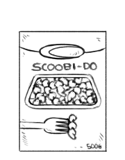

fresh pesto pasta
2 servings — 20 minutes

Summer is over, temperature in Montreal started to dip into the lower 20's. Colder times means collecting the remaining fresh herbs from my balcony garden. This year, I'm happy to say that my plants have thrived.
My basil plant was a real beauty, I harvested all I could from it and made pesto. With it, I made this recipe.
The combination of carrots and zucchinis look beautiful on a plate. To complete the dish, I added some roasted pumpkin seeds, and topped it off with cherry tomatoes. For bulk, I added scoobi do pasta to this dish. Scoobi do pasta happens to be my favorite pasta cut (I'm a sucker for shapes)
See how to roast your own pumpkin seeds.
 basil 2 cups
basil 2 cups garlic 3 cloves
garlic 3 cloves olive oil 1/4 cup
olive oil 1/4 cup nutritional yeast 1/4 cup
nutritional yeast 1/4 cup sea salt 1/4 tsp
sea salt 1/4 tsp black pepper 1/4 tsp
black pepper 1/4 tsp
pesto
- Blend the following ingredients in a food processor or blender: 2 cups of fresh basil, 3 cloves of garlic, 1/4 cup of nutritional yeast, 1/4 tsp of salt and a dash of black pepper.
- Add 1/4 cup of olive oil and blend again until smooth. Set aside.
 carrots 2
carrots 2- scoobi do 1 1/2 cups
 zucchini 1 large
zucchini 1 large small heirloom tomatoes 6
small heirloom tomatoes 6
main
- Bring a pot of water to a boil, add 1 1/2 cups of scoobi do pasta and cook until tender. While the pasta is cooking julienne 2 carrots and 1 zucchini.
- Drizzle some olive oil in a pan and bring up to medium heat. Add the vegetable strips and cook for 2-3 minutes.
- Remove from heat, add the cooked pasta as well as a few tablespoons of pesto! The recipe makes about 1 cup of pesto, which you can keep and use for future meals.
- Season pasta with salt and black pepper. Finally, top it all off with roasted pumpkin seeds and small heirloom tomatoes!